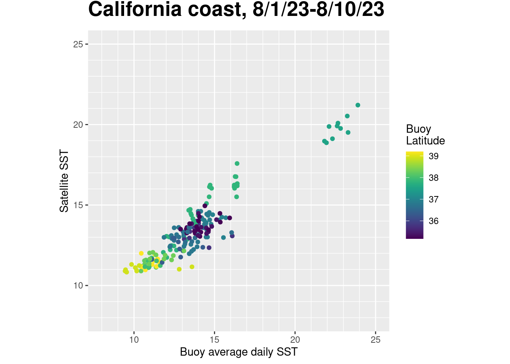

# Function to check if pkgs are installed, install missing pkgs, and load
pkgTest <- function(x)
{
if (!require(x,character.only = TRUE))
{
install.packages(x, dep=TRUE, repos = "https://cloud.r-project.org/")
if(!require(x,character.only = TRUE)) stop("Package not found")
}
}
list.of.packages <- c( "ncdf4", "rerddap", "plotdap", "httr",
"lubridate", "gridGraphics", "mapdata",
"ggplot2", "RColorBrewer", "grid", "PBSmapping",
"rerddapXtracto","dplyr","viridis","cmocean")
# create list of installed packages
pkges = installed.packages()[,"Package"]
for (pk in list.of.packages) {
pkgTest(pk)
}Match up satellite and buoy data
history | Updated March 2024
Background
There are buoys in many locations around the world that provide data streams of oceanic and atmospheric parameters. The data are often available through data centers like the National Data Buoy Center (NDBC https://www.ndbc.noaa.gov) and the ARGO floats program (http://www.argo.ucsd.edu). In situ buoy data are widely used to monitor environmental conditions.
In-situ buoy data can be used to evaluate the accuracy of satellite data.
Objective
In this exercise, we will learn how to match up satellite data to in situ buoy data using rerddap and rxtracto R packages.
The exercise demonstrates the following techniques:
- Downloading tabular data (buoy data) from CoastWatch ERDDAP data server
- Retrieving information about a dataset from ERDDAP
- Subsetting satellite data within a rectangular boundary
- Matching satellite data with the buoy data
- Running statistical analysis to compare buoy and satellite data
- Producing satellite maps and overlaying buoy data
Datasets used:
- The sea surface temperature (SST) satellite data from the NOAA Geo-polar blended analysis
- The NDBC Standard Meteorological Buoy Data (dataset ID: cwwcNDBCMet) is used for validating or ground truthing the satellite SST data
Install required packages and load libraries
Downloading buoy data from ERDDAP
Extract data using the rerddap::tabledap function
Using rerddap::tabledap function, we will request and download data with the following specifications:
- Buoy dataset ID: cwwcNDBCMet
- Region boundaries: 35 to 40 north latitude and -125 to -120 east longitude
- Time span: 08/01/2023 to 08/10/2023
- Variables: station, latitude, longitude, time, and water temperature parameters
# Subset and download tabular data from ERDDAP
ERDDAP_Node = "https://coastwatch.pfeg.noaa.gov/erddap"
NDBC_id = 'cwwcNDBCMet'
NDBC_info=info(datasetid = NDBC_id,url = ERDDAP_Node)
buoy <- rerddap::tabledap( url = ERDDAP_Node, NDBC_id,
fields=c('station', 'latitude', 'longitude', 'time', 'wtmp'),
'time>=2023-08-01', 'time<=2023-08-10',
'latitude>=35','latitude<=40', 'longitude>=-125','longitude<=-120',
'wtmp>0'
)
#Create data frame with the downloaded data
buoy.df <-data.frame(station=buoy$station,
longitude=as.numeric(buoy$longitude),
latitude=as.numeric(buoy$latitude),
time=strptime(buoy$time, "%Y-%m-%d %H:%M:%S"),
date=as.Date(buoy$time),
temp=as.numeric(buoy$wtmp))
# Check for unique stations
unique.sta <- unique(buoy$sta)
n.sta <- length(unique.sta)
n.sta[1] 24Plot the buoy data for the first 10 stations in buoy.df
Let’s see what the buoy data looks like for our time period.
plot(buoy.df$time,buoy.df$temp,type='n', xlab='Date', ylab='SST (ºC)',main='SST from the first 10 stations')
for (i in 1:10){
I=which(buoy.df$station==unique.sta[i])
lines(buoy.df$time[I],buoy.df$temp[I])
}Select buoy data closest in time to satellite data
Since buoy data are hourly and the satellite data are daily, the buoy data needs to be averaged daily for each station.
buoy.df.day=buoy.df %>%
group_by(station, date) %>%
summarize(
lon=mean(longitude),
lat=mean(latitude),
temp.day=mean(temp),
.groups="drop"
)
head(buoy.df.day)# A tibble: 6 × 5
station date lon lat temp.day
<chr> <date> <dbl> <dbl> <dbl>
1 46013 2023-08-01 -123. 38.2 10.4
2 46013 2023-08-02 -123. 38.2 10.7
3 46013 2023-08-03 -123. 38.2 10.6
4 46013 2023-08-04 -123. 38.2 10.4
5 46013 2023-08-05 -123. 38.2 10.7
6 46013 2023-08-06 -123. 38.2 10.6Download Satellite SST (sea surface temperature) data
We will use Sea surface temperature (SST) satellite data from CoastWatch West code node ERDDAP server.
URL: https://coastwatch.pfeg.noaa.gov/erddap/ Dataset ID:nesdisBLENDEDsstDNDaily
url= 'https://coastwatch.pfeg.noaa.gov/erddap/'
datasetid = 'nesdisBLENDEDsstDNDaily'
# Get Data Information given dataset ID and URL
dataInfo <- rerddap::info(datasetid, url)
# Show data Info
dataInfo<ERDDAP info> nesdisBLENDEDsstDNDaily
Base URL: https://coastwatch.pfeg.noaa.gov/erddap
Dataset Type: griddap
Dimensions (range):
time: (2019-07-22T12:00:00Z, 2025-03-04T12:00:00Z)
latitude: (-89.975, 89.975)
longitude: (-179.975, 179.975)
Variables:
analysed_sst:
Units: degree_C
analysis_error:
Units: degree_C
mask:
sea_ice_fraction:
Units: 1 Extract the matchup data using rxtracto
We will extract satellite data for each buoy station.
1. get coordinates of each buoy station 2. use the rxtracto function and the buoy coordinates to download satellite data closest to each station
# Set the variable name of interest from the satellite data
parameter <- 'analysed_sst'
# Set x,y,t,z coordinates based on buoy data
xcoord <- buoy.df.day$lon
ycoord <- buoy.df.day$lat
tcoord <- buoy.df.day$date# Set the variable name of interest from the satellite data
parameter <- 'analysed_sst'
# Set x,y,t,z coordinates based on buoy data
xcoord <- buoy.df.day$lon
ycoord <- buoy.df.day$lat
tcoord <- buoy.df.day$date
# Extract satellite data
extract <- rxtracto(dataInfo, parameter=parameter,
tcoord=tcoord,
xcoord=xcoord,
ycoord=ycoord,
xlen=.01,ylen=.01)
buoy.df.day$sst<-extract$`mean analysed_sst`Get subset of data where a satellite value was found
- Our satellite product is gap-free (gaps due to clouds were filled using some interpolation) but it has a spatial resolution of 5km. Some buoy stations may be so close to shore that they end up in the landmask of the satellite data. So let’s find the stations that were matched up to an SST pixel.
# Get subset of data where there is a satellite value
goodbuoy<-subset(buoy.df.day, sst > 0)
unique.sta<-unique(goodbuoy$station)
nbuoy<-length(unique.sta)
ndata<-length(goodbuoy$station)Compare results for satellite and buoy
- Plot the satellite SST verses the buoy temperature to visualize how well the two datasets match each other.
# Set up map title
main="California coast, 8/1/23-8/10/23"
p <- ggplot(goodbuoy, aes(temp.day, sst,color=lat)) +
coord_fixed(xlim=c(8,25),ylim=c(8,25))
p + geom_point() +
ylab('Satellite SST') +
xlab('Buoy average daily SST') +
scale_x_continuous(minor_breaks = seq(8, 25)) +
scale_y_continuous(minor_breaks = seq(8, 25)) +
#geom_abline(a=fit[1],b=fit[2]) +
#annotation_custom(my_grob) +
#scale_color_gradientn(colours = "viridis", name="Buoy\nLatitude") +
scale_color_viridis(discrete = FALSE, name="Buoy\nLatitude") +
labs(title=main) + theme(plot.title = element_text(size=20, face="bold", vjust=2)) 
Run a linear regression of Blended SST versus the buoy data. * The R squared is close to 1 (0.8733) * The slope is 0.7151
lmHeight = lm(sst~temp.day, data = goodbuoy)
summary(lmHeight)
Call:
lm(formula = sst ~ temp.day, data = goodbuoy)
Residuals:
Min 1Q Median 3Q Max
-2.21936 -0.47676 0.02142 0.40927 2.19949
Coefficients:
Estimate Std. Error t value Pr(>|t|)
(Intercept) 3.65951 0.27549 13.28 <2e-16 ***
temp.day 0.71469 0.01976 36.17 <2e-16 ***
---
Signif. codes: 0 '***' 0.001 '**' 0.01 '*' 0.05 '.' 0.1 ' ' 1
Residual standard error: 0.7322 on 195 degrees of freedom
Multiple R-squared: 0.8703, Adjusted R-squared: 0.8696
F-statistic: 1309 on 1 and 195 DF, p-value: < 2.2e-16Create a map of SST and overlay the buoy data
Extract blended SST data for August 1st, 2023
# First define the box and time limits of the requested data
ylim<-c(32,42)
xlim<-c(-127,-118)
# Extract the monthly satellite data
SST <- rxtracto_3D(dataInfo,xcoord=xlim,ycoord=ylim,parameter=parameter,
tcoord=c('2023-08-01','2023-08-01'))
SST$sst <- drop(SST$analysed_sst)Create the map frame for the satellite data and buoy SST overlay
mapFrame<- function(longitude,latitude,sst){
dims<-dim(sst)
sst<-array(sst,dims[1]*dims[2])
sstFrame<-expand.grid(x=longitude,y=latitude)
sstFrame$sst<-sst
return(sstFrame)
}
sstFrame<-mapFrame(SST$longitude,SST$latitude,SST$sst)
coast <- map_data("worldHires", ylim = ylim, xlim = xlim)
my.col <- colorRampPalette(rev(brewer.pal(11, "RdYlBu")))(22-13)
buoy2<-subset(buoy.df.day, month(date)==8 &day(date)==1 & temp.day > 0)Create the map
myplot<-ggplot(data = sstFrame, aes(x = x, y = y, fill = sst)) +
geom_tile(na.rm=T) +
geom_polygon(data = coast, aes(x=long, y = lat, group = group), fill = "grey80") +
theme_bw(base_size = 15) + ylab("Latitude") + xlab("Longitude") +
coord_fixed(1.3,xlim = xlim, ylim = ylim) +
scale_fill_cmocean(name = 'thermal',limits=c(10,25),na.value = NA) +
ggtitle(paste("Satellite SST and buoy temperature (circles) \n", unique(as.Date(SST$time)))) +
geom_point(data=buoy2, aes(x=lon,y=lat,color=temp.day),size=3,shape=21,color="black") +
scale_color_cmocean(name = 'thermal',limits=c(10,25),na.value ="grey20")
myplot